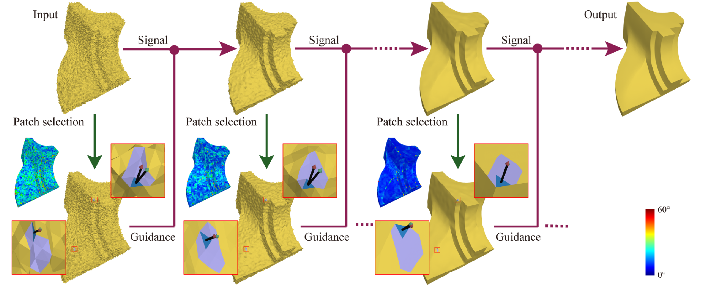
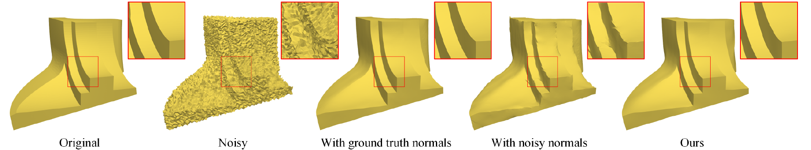
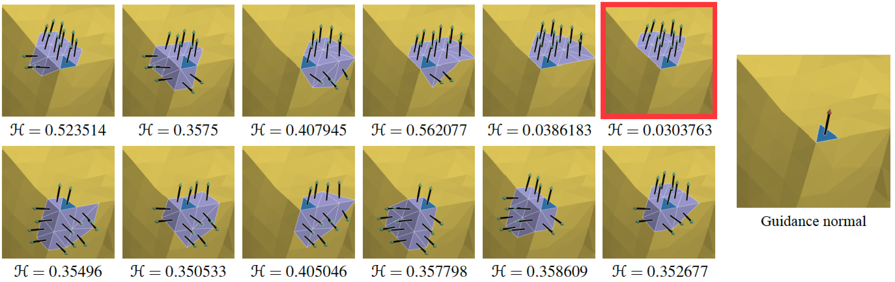
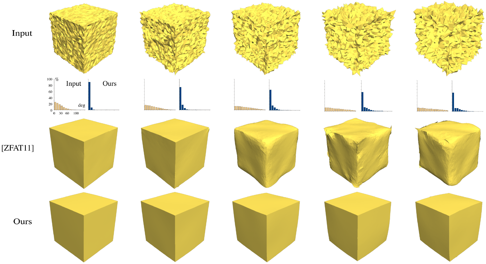
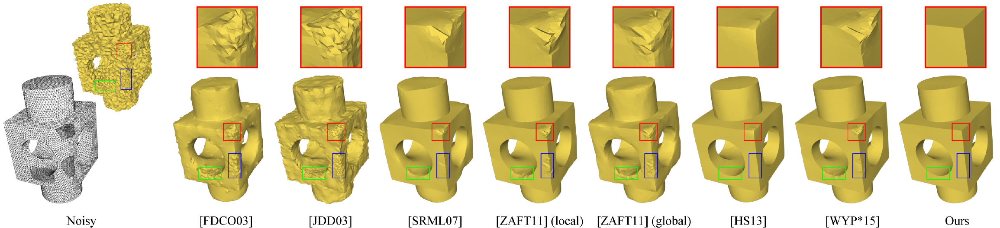
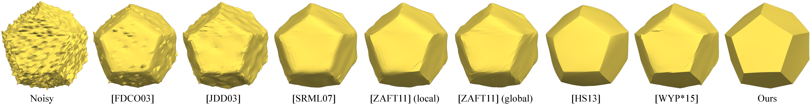

Guided Mesh Normal Filtering
Wangyu Zhang1
Bailin Deng2,3
Juyong Zhang1
Sofien Bouaziz2
Ligang Liu1
1University of Science and Technology of China
2École polytechnique fédérale de Lausanne
3University of Hull
Computer Graphics Forum 2015
(Proc.Pacific Graphics 2015) |
|
 |
Teaser: The pipeline of our denoising method by using the guided normal filtering strategy, using two faces close to sharp features on the ground truth mesh (shown in blue) to demonstrate our patch-based construction of the guidance normals. The ground truth normals and the guidance normals are shown in red and green, respectively. The color coding shows the angles between the ground truth and the guidance normals, which gradually decrease during the iterations. |
| |
Contributions: |
1, A novel patch-based approach to construct the guidance normal for each face, such that the joint bilateral filter averages normals that belong to a common smooth region, while preserving sharp changes of normals that indicate features.
2, The proposed guided mesh normal filtering method is successfully applied in mesh denoising problem. It provides a reliable estimation of the true normal even with a high-level of noise. The effectiveness of our approach is validated by extensive experimental results.
3, The denoising algorithm is quite effective and efficient and the souce code is freely available.
|
Illustration: |
|  |
| Figure 1: Comparison between joint bilateral normal filtering for denoising, using different guidance normal fields. Our patch-based guidance normals produce similar results as using the ground truth normals for guidance, which also demonstrates that a good guidance is important in denoising. |
| |
|  |
| Figure 2: Patch-based construction of a guidance normal. For a given face (in blue), the face normals from each candidate patch that contains the given face are shown, together with the consistency measure H computed from Equation (7) in the paper. The patch with the smallest value of H (highlighted in red) is chosen, and its average normal is used as the guidance normal for the given face. |
| |
|  |
| Figure 3: Comparison between our method and the bilateral filtering scheme from [ZFAT11], which can be considered as joint bilateral normal filtering with the input face normals as guidance. The histograms show statistics of the angle error function in Equation (12) across all edges. The robustness of our guidance normal field helps to correctly preserve sharp features even for
highly noisy meshes. The intensity variance of the Gaussian noise is from left to right 0.2, 0.4, 0.6, 0.8, and 1.0 (see Equation 14). |
| |
|  |
| Figure 4: Denoising a mesh with non-uniform sampling. For the resulting meshes, regions with denser triangulation are highlighted with colored rectangles. The intensity variance of the Gaussian noise applied to this model is 0.4. |
| |
|  |
| Figure 5: Comparison of denoising algorithms on a mesh with impulsive noise. |
| |
| Acknowledgements: |
We thank Justin Solomon and Ruimin Wang for providing the results of [SCBW14] and [WYL*14], and Mingqiang Wei for providing the program of [WYP*15]. We also thank Hao Li, Hongwei Yang and Chao Hu for their help to prepare the results and video. This work was supported by the NSF of China (Nos. 61303148, 61222206), NSF of AnHui Province, China (No. 1408085QF119), Specialized Research Fund for the Doctoral Program of Higher Education under contract (No. 20133402120002), One Hundred Talent Project of the Chinese Academy of Sciences, and Swiss National Science Foundation (grant 200021_137626). |
|
| |
| BibTex: |
| |
@article{ZhangFilter2015,
author = {Wangyu Zhang and Bailin Deng and Juyong Zhang and Sofien Bouaziz and Ligang Liu},
title = {Guided Mesh Normal Filtering},
journal = {Computer Graphics Forum (Special Issue of Pacific Graphics 2015)},
volume = {34},
issue = {7},
pages = {23-34},
year = {2015}
} |
| |
| Downloads: |
| |
| Disclaimer: The paper listed on this page is copyright-protected. By clicking on the paper link below, you confirm that you or your institution have the right to access the corresponding pdf file. |
|